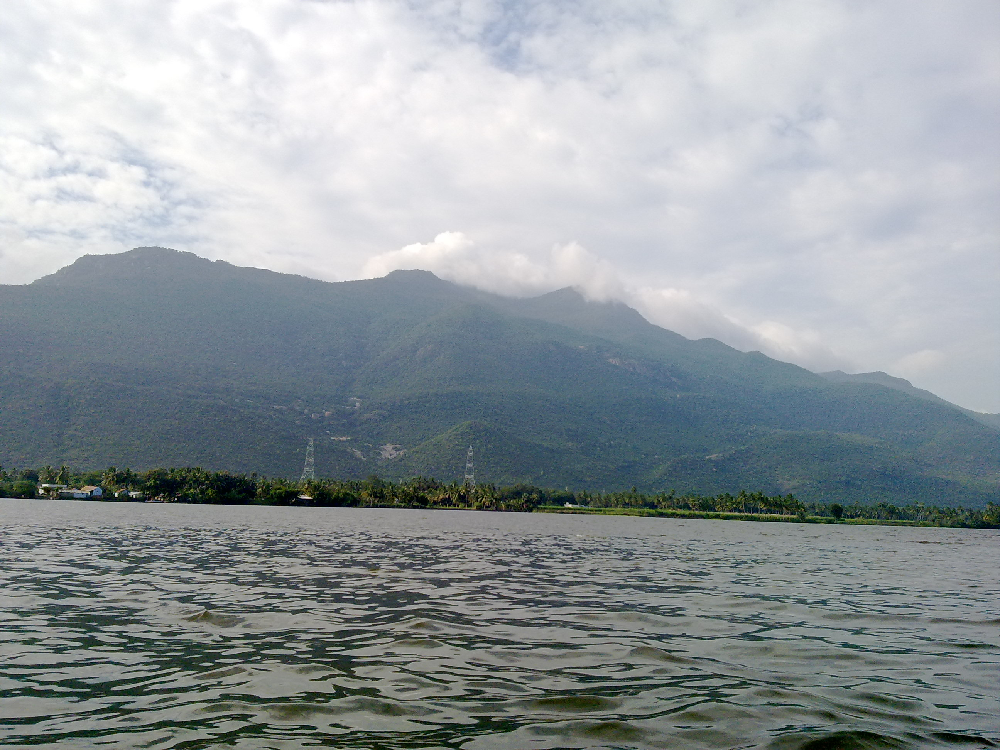
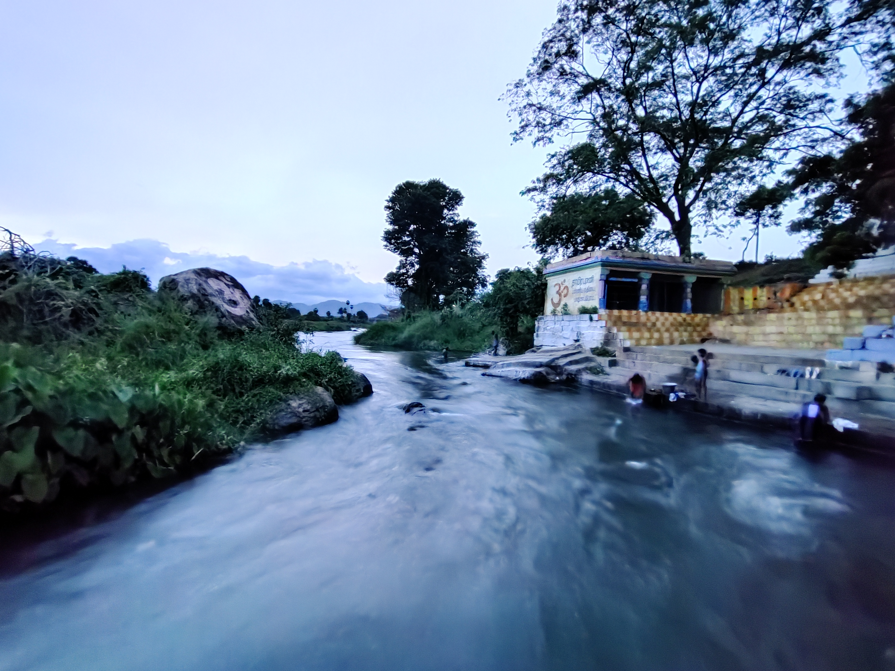
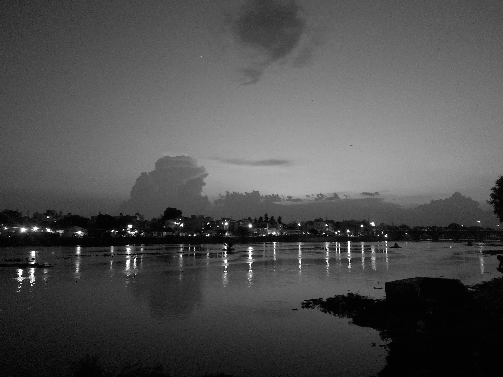
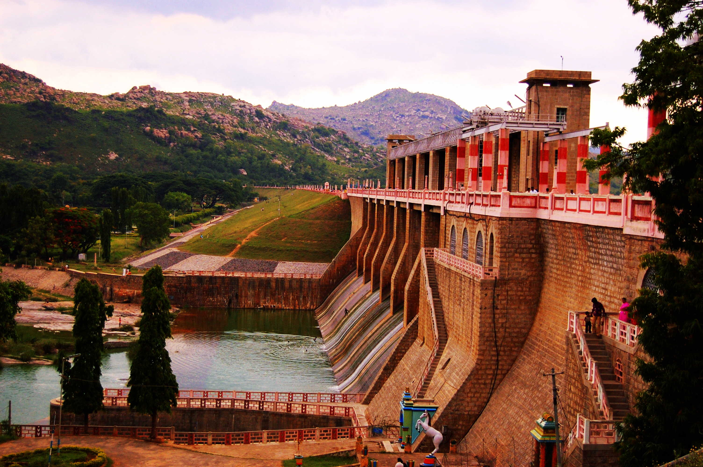
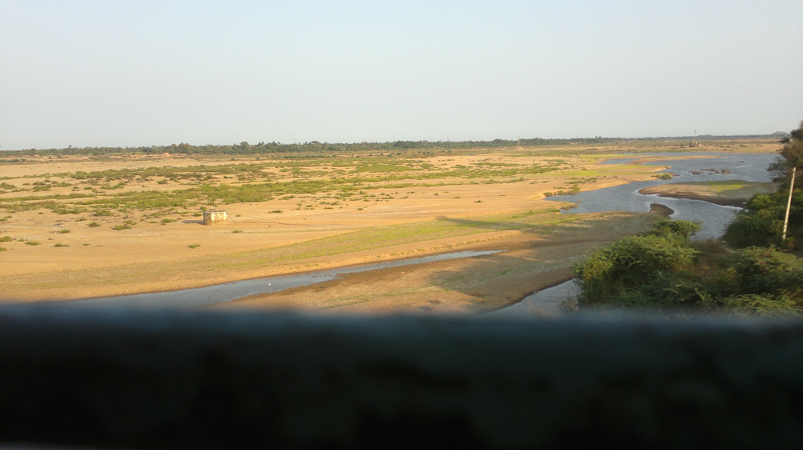
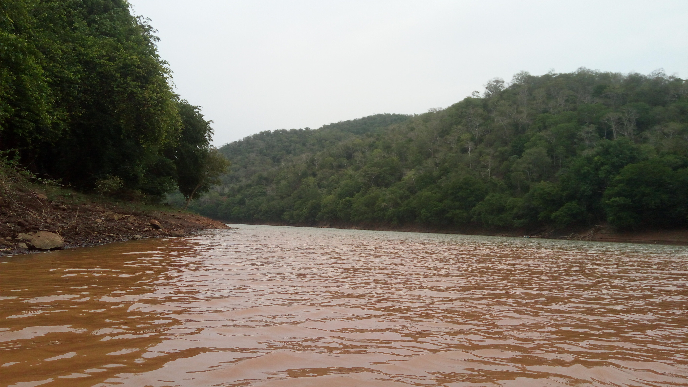
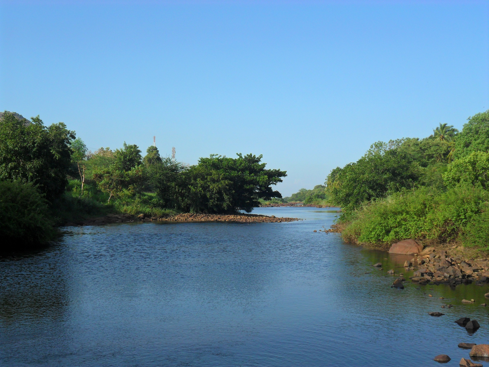

தமிழ்நாட்டின் நீர்வளத்திற்கும், விவசாயத்திற்கும், மக்களின் வாழ்வாதாரத்திற்கும் ஆறுகள் முக்கிய ஆதாரமாக உள்ளன. மேற்குத் தொடர்ச்சி மலை மற்றும் கிழக்குத் தொடர்ச்சி மலைப் பகுதிகளில் உருவாகி, கிழக்கு நோக்கிப் பாய்ந்து வங்கக்கடலில் கலக்கும் இந்த ஆறுகள் பற்றிய அறிமுகம்.
தமிழ்நாட்டின் நீர்வள அமைப்பு 17 முக்கிய ஆற்றுப் படுகைகளாக (River Basins) வகைப்படுத்தப்பட்டுள்ளது — சென்னை, பாலாறு, வராகநதி, தென்பெண்ணையாறு, பரவனாறு, வெள்ளாறு, காவிரி, அக்னியாறு, பாம்பாறு–கொட்டகரையாறு, வைகை, குண்டாறு, வைப்பாறு, கல்லாறு, தாமிரபரணி, நம்பியாறு, கோதையாறு, பரம்பிக்குளம்–ஆழியாறு. இந்தப் படுகைகளுக்குள் பல முக்கிய ஆறுகளும் அவற்றின் துணை ஆறுகளும் உள்ளன.
குறிப்பு: "17" என்பது தமிழ்நாட்டின் அனைத்து தனித்தனி ஆறுகளின் எண்ணிக்கை அல்ல; இது முக்கிய ஆற்றுப் படுகைகளின் வகைப்பாடு. அரசு ஆவணங்களில் 34 ஆறுகள் குறிப்பிடப்பட்டுள்ளன.
மழை மற்றும் மலைப்பகுதிகளில் கிடைக்கும் நீரைச் சேகரித்து, சமவெளிப் பகுதிகளுக்கு கொண்டு செல்கின்றன.
ஆறுகளின் நீர் அணைகள் மற்றும் கால்வாய்கள் மூலம் விவசாய நிலங்களுக்கு கொண்டு செல்லப்பட்டு பயிர் உற்பத்திக்கு பயன்படுகிறது. காவிரி மற்றும் அதன் துணை ஆறுகள் முக்கிய பாசன ஆதாரங்களில் ஒன்றாக உள்ளன.
பல நகரங்கள் மற்றும் கிராமங்களின் குடிநீர் தேவையை ஆறுகள் மற்றும் அவற்றைச் சார்ந்த நீர்த்தேக்கங்கள் பூர்த்தி செய்கின்றன.
சில ஆறுகளில் அணைகள் மற்றும் நீர்மின் நிலையங்கள் மூலம் நீர்மின்சாரம் உற்பத்தி செய்யப்படுகிறது.
ஆறுகள் ஈரநிலங்கள், விவசாய நிலங்கள் மற்றும் பல்வேறு உயிரினங்களின் வாழ்விடங்களுக்கு நீர் வழங்குகின்றன.

தமிழ்நாட்டின் மிக முக்கியமான ஆறுகளில் காவிரியும் ஒன்று. அதன் துணை ஆறுகளுடன் சேர்ந்து விவசாயம் மற்றும் பாசனத்திற்கு முக்கிய ஆதாரமாக விளங்குகிறது. காவிரி நீர் தமிழ்நாட்டின் காவிரி டெல்டா பகுதிகளின் விவசாயத்திற்கும் முக்கியமானது.

தென் தமிழ்நாட்டின் முக்கியமான ஆறுகளில் ஒன்று. மேற்குத் தொடர்ச்சி மலைப் பகுதியில் உருவாகி திருநெல்வேலி மற்றும் தூத்துக்குடி பகுதிகளின் நீர்வளம் மற்றும் விவசாயத்திற்கு முக்கிய ஆதாரமாக உள்ளது.

வைகை ஆறு மேற்கு தொடர்ச்சி மலைப் பகுதியில் உருவாகி தேனி மற்றும் மதுரை வழியாகப் பாய்கிறது. தென் தமிழ்நாட்டின் விவசாயம் மற்றும் நீர்வளத் தேவைகளில் முக்கிய பங்கு வகிக்கிறது.

தமிழ்நாட்டின் முக்கிய ஆறுகளில் ஒன்றான தென்பெண்ணையாறு, வடக்கு மற்றும் வடகிழக்கு தமிழ்நாட்டின் பல பகுதிகளின் பாசனத்திற்கு பயன்படுகிறது.

பாலாறு வட தமிழ்நாட்டின் முக்கிய ஆறுகளில் ஒன்றாகும். இதன் நீர்ப்பிடிப்புப் பகுதிகள் விவசாயம் மற்றும் நிலத்தடி நீர் வளத்திற்கு முக்கியத்துவம் பெற்றவை.

பவானி ஆறு காவிரியின் முக்கிய துணை ஆறுகளில் ஒன்றாகும். மேற்குத் தமிழ்நாட்டின் நீர்வளம் மற்றும் பாசனத்தில் முக்கிய பங்கு வகிக்கிறது. பவானிசாகர் அணை உள்ளிட்ட நீர்த்தேக்க அமைப்புகள் இதன் நீரைப் பயன்படுத்துகின்றன.

அமராவதி ஆறு காவிரியின் முக்கிய துணை ஆறுகளில் ஒன்றாகும். இதன் நீர் சுற்றியுள்ள பகுதிகளின் பாசனத் தேவைகளுக்கு பயன்படுகிறது.
| ஆறு | முக்கிய பகுதி | முக்கிய பயன்பாடு |
|---|---|---|
| காவிரி | மத்திய / டெல்டா | பாசனம், குடிநீர் |
| தாமிரபரணி | திருநெல்வேலி – தூத்துக்குடி | பாசனம், குடிநீர் |
| வைகை | தேனி – மதுரை | பாசனம், குடிநீர் |
| தென்பெண்ணையாறு | கிருஷ்ணகிரி – விழுப்புரம் | பாசனம் |
| பாலாறு | வேலூர் – காஞ்சிபுரம் | பாசனம், நீர்வளம் |
| பவானி | ஈரோடு | பாசனம் |
| அமராவதி | திருப்பூர் – கரூர் | பாசனம் |
| வெள்ளாறு | வட / மத்திய தமிழ்நாடு | பாசனம் |
| வைகைப்பாறு | தென் தமிழ்நாடு | பாசனம் |
| வைப்பாறு | விருதுநகர் – தூத்துக்குடி | பாசனம் |
| குண்டாறு | தென் தமிழ்நாடு | பாசனம் |
| நொய்யல் | கோயம்புத்தூர் – திருப்பூர் | நீர்வளம் |
| மொயாறு | நீலகிரி | காவிரி நீர்வளம் |
| செய்யாறு | திருவண்ணாமலை | பாலாறு துணை ஆறு |
தமிழ்நாட்டில் 17 முக்கிய ஆற்றுப் படுகைகள் இருந்தாலும், அவற்றுக்குள் பல முக்கிய மற்றும் துணை ஆறுகள் உள்ளன. அரசு ஆவணங்களில் 34 ஆறுகள் குறிப்பிடப்பட்டுள்ளன.